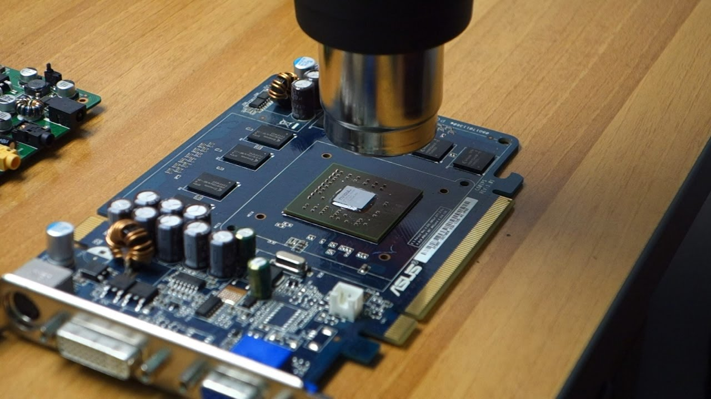
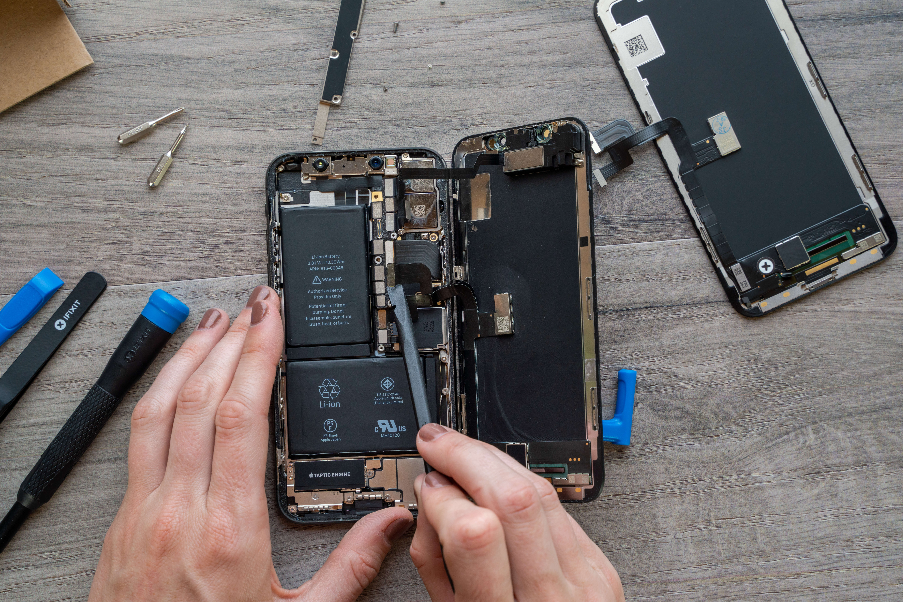
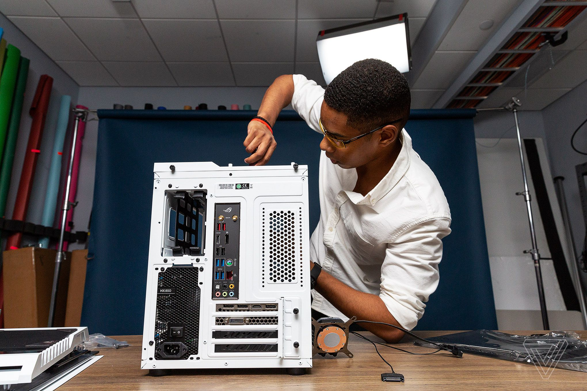

GPU Reflow
Consiste no aquecimento da dye da GPU a elevadas temperaturas com flux(deve ser colocado ao redor da dye e em baixa quantidade). Necessário quando as conexões da dye à pcb quebram (GPU sem video out).

Reparação Iphone
Das reparações mais simples. Claro que dependendo do problema, mas na maior parte das vezes não é em nada diferente de montar legos.

PC Building
Obviamente o mais divertido para mim. Adoro personalizar o meu PC como bem entendo, usar as partes que quiser, etc. Nesta parte também se incorpora algo bastante simples que é a troca da pasta térmica. Muitas vezes é a solução para um PC/portátil sem video out.